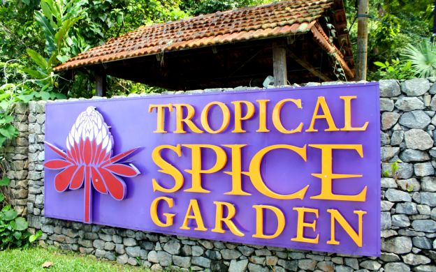

On 23 September 2019, Me and my schoolmates went to Tropical Spice Garden in Penang.My parentals watch over us while we had fun and enjoying our time. We were asked to be careful while we do the activities there.I really enjoyed the trip with my schoolmates.During this outing, I have seen and learned about the flora and fauna there. I enjoyed my trip to Tropical Spice Garden and hope we will go on another outing again in the near future.
Tropical Spice Garden
Tropical Spice Garden is a bio-diverse living museum of the spices and other tropical plants that have shaped Penang's history. Tropical Spice Garden is also recognised as one of the best flower gardens in Penang, Malaysia for anyone that appreciates and enjoys learning about Malaysian flora and fauna.The six landscaped acres of the garden is a treasure trove of more than 500 living specimens of lush and exotic flora from around the world.
Ingredients
How it works